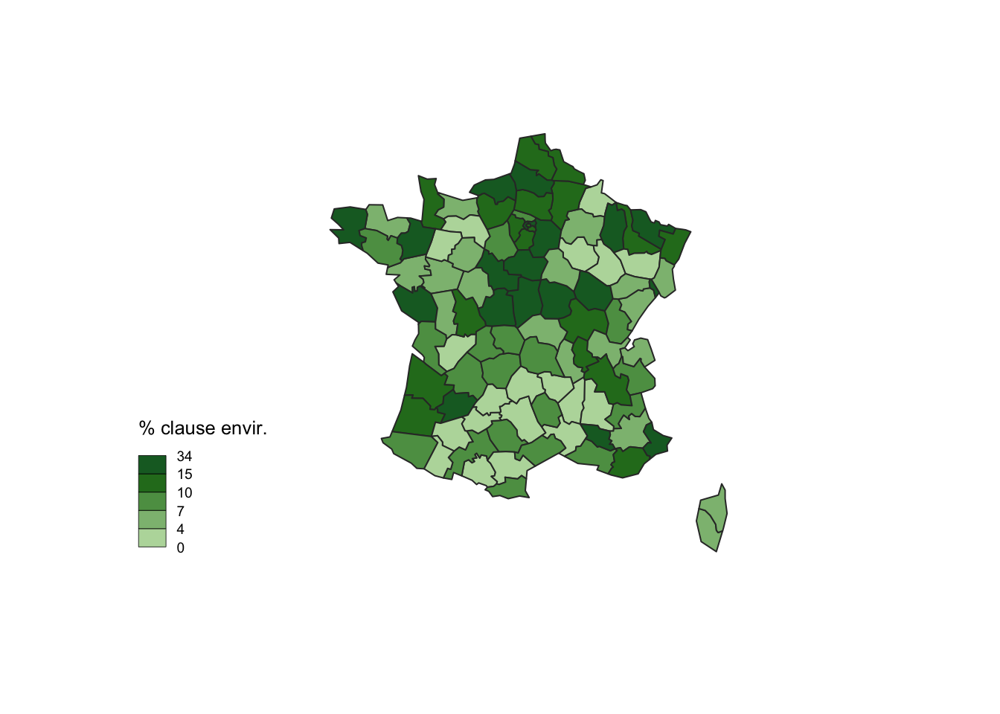
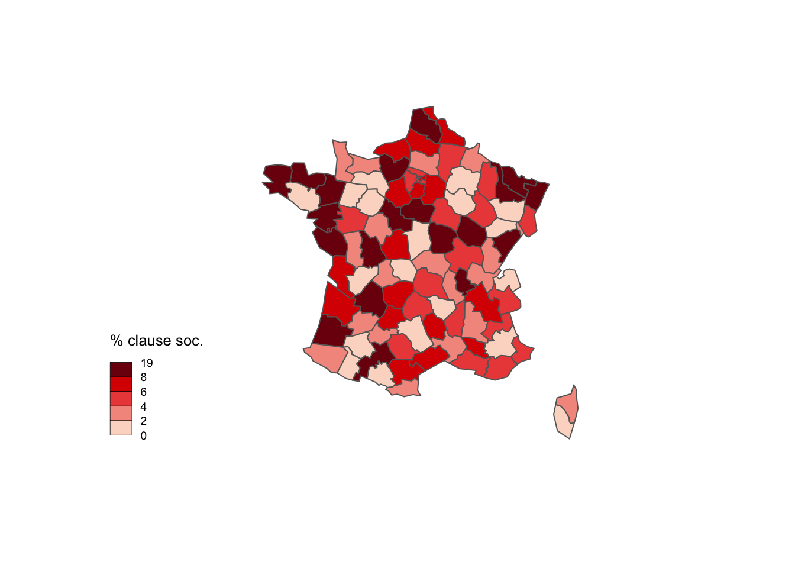

Contrairement à la base TED, structurée par les services de l’UE en un fichier CSV unique, les données BOAMP prennent la forme de fichiers (XML ou JSON) propre à chaque avis déposé au Bulletin Officiel des Annonces des Marchés Publics. Un avis d’attribution correspond à un fichier. Ce qui signifie que chaque fichier correspond potentiellement à plusieurs lots, qui auront pour tout ou partie été attribués, chaque lot pouvant de surcroît être attribué à plus d’une entreprise.
Le code source nécessaire à l’obtention de notre base est disponible ici.
library(tidyverse)
library(banR)
library(jsonlite)
library(magrittr)
library(data.tree)
library(geosphere)
library(sf)
library(cartography)
library(stringr)
library(httr)
library(dplyr)
library(stringr)
library(DT)
#creating the data repository
data_dir <- 'data'
if (!dir.exists(data_dir)) {
dir.create(data_dir)
}
BOAMP_destfile <- str_c(data_dir, "/BOAMP_df.Rda")
if (!file.exists(BOAMP_destfile)) {
#============================================
#==== First, GET the web id =================
#============================================
#================ useful for criterion request ===================
space = "%20" # 1 space
slash.sign = "%2F" # /
equal.sign = "%3D" # =
greater.than.sign = "%3E" # >
less.than.sign = "%3C" # <
greater.than.or.equal.to.sign = paste0(greater.than.sign,equal.sign) # >=
less.than.or.equal.to.sign = paste0(less.than.sign,equal.sign) # <=
# ==============================================
url_start="http://api.dila.fr/opendata/api-boamp/annonces/search"
# ========== Define timelaps ===================
periods=c("01-01","05-01","09-01","13-01","17-01","21-01","25-01","28-01",
"01-02","05-02","09-02","13-02","17-02","21-02","25-02","28-02",
"01-03","05-03","09-03","13-03","17-03","21-03","25-03","28-03",
"01-04","05-04","09-04","13-04","17-04","21-04","25-04","28-04",
"01-05","05-05","09-05","13-05","17-05","21-05","25-05","28-05",
"01-06","05-06","09-06","13-06","17-06","21-06","25-06","28-06",
"01-07","05-07","09-07","13-07","17-07","21-07","25-07","28-07",
"01-08","05-08","09-08","13-08","17-08","21-08","25-08","28-08",
"01-09","05-09","09-09","13-09","17-09","21-09","25-09","28-09",
"01-10","05-10","09-10","13-10","17-10","21-10","25-10","28-10",
"01-11","05-11","09-11","13-11","17-11","21-11","25-11","28-11",
"01-12","05-12","09-12","13-12","17-12","21-12","25-12","28-12","31-12")
# ============== GET Function ====================
get_webid<-function(day_start, month_start, day_stop, month_stop){fromJSON(rawToChar(httr::GET(paste0(url_start,
"?criterion=",
"nature_cat", equal.sign, "attribution",
space, "AND", space,
"dateparution", greater.than.or.equal.to.sign, "2020", slash.sign, month_start, slash.sign, day_start, # you can change the year just here
space, "AND", space,
"dateparution", less.than.or.equal.to.sign, "2020", slash.sign, month_stop, slash.sign, day_stop))$content))$item$value} # you can change the year just here
# ============= List of all the web id =================
rm(list_webid)
list_webid=c()
for(t in 1:length(periods)-1){list_webid<-c(list_webid,get_webid(unlist(strsplit(periods[t], split="-"))[1], unlist(strsplit(periods[t], split="-"))[2],
unlist(strsplit(periods[t+1], split="-"))[1],unlist(strsplit(periods[t+1], split="-"))[2]))}
#=======================================================
# =========GET the award notices based on the web id ===
#=======================================================
output.dir = "~/BOAMP-tender-data-2020"
dir.create(output.dir, recursive=FALSE, showWarnings=FALSE)
for(i in 1:length(list_webid)){
api.output.dir = file.path(output.dir,list_webid[i])
http.request =
paste0("http://api.dila.fr/opendata/api-boamp/annonces/v230/",list_webid[i])
r = GET(http.request, add_headers(Accept = "application/json"))
bin <- content(r, "raw")
writeBin(bin, file.path(paste0(api.output.dir,".json")))}
which(list_webid=="20-46396")
which(list_webid=="20-134546")
which(list_webid=="20-159402")
# ========================================
# =========== generate the dataframe ====
# =======================================
output.dir = "~/BOAMP-tender-data-2020"
list.files(output.dir)
list_temp <-c(list.files(output.dir))
list_webid<-substr(list_temp, 1, nchar(list_temp)-5)
list_webid_unique <-unique(list_webid)
make_df<-function(rank){fromJSON(paste0(file.path(output.dir,list_webid_unique[rank]),".json"))}
id=c()
sociaux=c()
envir=c()
adjudicateurnuts=c()
denomination_ach=c()
adresse_ach=c()
codepostal_ach=c()
ville_ach=c()
typepouvoiradjudicateur=c()
nbr_lots=c()
typeprocedure=c()
typeorganisme=c()
rm(i)
for(i in 1:length(list_webid_unique)){test=make_df(i)
id[i]<-ifelse(is.null(test$gestion$reference$idweb), NA, test$gestion$reference$idweb)
denomination_ach[i]<-ifelse(is.null(test$donnees$identite$denomination), NA,test$donnees$identite$denomination)
adresse_ach[i]<-ifelse(is.null(test$donnees$identite$adresse), NA,test$donnees$identite$adresse)
codepostal_ach[i]<-ifelse(is.null(test$donnees$identite$cp), NA,test$donnees$identite$cp)
ville_ach[i]<-ifelse(is.null(test$donnees$identite$ville), NA,test$donnees$identite$ville)
sociaux[i]<-ifelse(is.null(test$gestion$indexation$criteressociauxenv$sociaux),0,1)
envir[i]<-ifelse(is.null(test$gestion$indexation$criteressociauxenv$environnementaux),0,1)
adjudicateurnuts[i]<-ifelse(is.null(test$donnees$identite$adjudicateurnuts), NA,test$donnees$identite$adjudicateurnuts)
tryCatch(nbr_lots[i]<-ifelse(is.na(test$donnees$objet$lots),NA,ifelse(nrow(as.data.frame(test$donnees$objet$lots$lot))==0,1,nrow(as.data.frame(test$donnees$objet$lots$lot)))), error = function(e) nbr_lots[i]<-1)
typepouvoiradjudicateur[i]<-ifelse(is.null(test$donnees$typepouvoiradjudicateur),NA,
ifelse(!is.null(test$donnees$typepouvoiradjudicateur$minautoritenationale),"minautoritenationale",
ifelse(!is.null(test$donnees$typepouvoiradjudicateur$agencenational), "agencenational",
ifelse(!is.null(test$donnees$typepouvoiradjudicateur$autotriteregional), "autoriteregional",
ifelse(!is.null(test$donnees$typepouvoiradjudicateur$agenceregional),"agenceregionale",
ifelse(!is.null(test$donnees$typepouvoiradjudicateur$orgdroitpublic),"orgdroitpublic",
ifelse(!is.null(test$donnees$typepouvoiradjudicateur$institutioneuropeenne),"institutioneuropeenne","autre"
)
))))))
typeprocedure[i]<-ifelse(is.null(test$donnees$procedure$typeprocedure),NA,
ifelse(!is.null(test$donnees$procedure$typeprocedure$ouvert), "ouvert",
ifelse(!is.null(test$donnees$procedure$typeprocedure$restreint), "restreint",
ifelse(!is.null(test$donnees$procedure$typeprocedure$negocie), "negocie",
ifelse(!is.null(test$donnees$procedure$typeprocedure$procedureadapte), "procedureadapte",
ifelse(!is.null(test$donnees$procedure$typeprocedure$dialoguecompetitif), "dialoguecompetitif",
ifelse(!is.null(test$donnees$procedure$typeprocedure$partenariatinnovation), "partenariatinnovation",NA
)))))))
typeorganisme[i]<-ifelse(is.null(test$donnees$typeorganisme),NA,
ifelse(!is.null(test$donnees$typeorganisme$institutioneuropeenne), "institutioneuropeenne",
ifelse(!is.null(test$donnees$typeorganisme$etat),"etat",
ifelse(!is.null(test$donnees$typeorganisme$region),"region",
ifelse(!is.null(test$donnees$typeorganisme$departement),"departement",
ifelse(!is.null(test$donnees$typeorganisme$commune),"commune",
ifelse(!is.null(test$donnees$typeorganisme$epn), "epn",
ifelse(!is.null(test$donnees$typeorganisme$ept), "ept",
ifelse(!is.null(test$donnees$typeorganisme$autre),"autre",NA)))))))))
}
df<-cbind(id, denomination_ach,adresse_ach,codepostal_ach,ville_ach ,adjudicateurnuts,typepouvoiradjudicateur, typeorganisme ,nbr_lots, typeprocedure, sociaux, envir)
df<-as.data.frame(df)
df$sociaux <-as.numeric(df$sociaux)
df$envir <- as.numeric(df$envir)
summary(df)
#######################################
# DATABASE RELATIVE TO SELECTED SUPPLIERS
########################################
suppl_denomination=c()
suppl_adresse=c()
suppl_cp=c()
suppl_ville=c()
suppl_codenuts=c()
suppl_nboffrerecu=c()
lot_cpv=c()
id=c()
k=1
for(i in 32536:length(list_webid_unique)){
for(j in 1:ifelse(is.na(df[i,]$nbr_lots),1,df[i,]$nbr_lots)){running_case = make_df(i)
suppl_denomination[k]<-ifelse(!is.null(tryCatch(running_case$donnees$attribution$decision$titulaireandRENSEIGNEMENT[[j]][1,]$denomination, error = function(e) NA)),
tryCatch(running_case$donnees$attribution$decision$titulaireandRENSEIGNEMENT[[j]][1,]$denomination, error = function(e) NA),NA)
suppl_adresse[k]<-ifelse(!is.null(tryCatch(running_case$donnees$attribution$decision$titulaireandRENSEIGNEMENT[[j]][1,]$adresse, error = function(e) NA)),
tryCatch(running_case$donnees$attribution$decision$titulaireandRENSEIGNEMENT[[j]][1,]$adresse, error = function(e) NA),NA)
suppl_cp[k]<-ifelse(!is.null(tryCatch(running_case$donnees$attribution$decision$titulaireandRENSEIGNEMENT[[j]][1,]$cp, error = function(e) NA)),
tryCatch(running_case$donnees$attribution$decision$titulaireandRENSEIGNEMENT[[j]][1,]$cp, error = function(e) NA),NA)
suppl_ville[k]<-ifelse(!is.null(tryCatch(running_case$donnees$attribution$decision$titulaireandRENSEIGNEMENT[[j]][1,]$ville, error = function(e) NA)),
tryCatch(running_case$donnees$attribution$decision$titulaireandRENSEIGNEMENT[[j]][1,]$ville, error = function(e) NA),NA)
suppl_codenuts[k]<-ifelse(!is.null(tryCatch(running_case$donnees$attribution$decision$titulaireandRENSEIGNEMENT[[j]][1,]$codenuts, error = function(e) NA)),
tryCatch(running_case$donnees$attribution$decision$titulaireandRENSEIGNEMENT[[j]][1,]$codenuts, error = function(e) NA),NA)
suppl_nboffrerecu[k]<-ifelse(!is.null(tryCatch(running_case$donnees$attribution$decision$titulaireandRENSEIGNEMENT[[j]][1,]$nboffrerecu, error = function(e) NA)),
tryCatch(running_case$donnees$attribution$decision$titulaireandRENSEIGNEMENT[[j]][1,]$nboffrerecu, error = function(e) NA),NA)
lot_cpv[k]<-ifelse(!is.null(tryCatch(as.data.frame(running_case$donnees$objet$lots[1]$lot)$cpv[[j]]$principal, error = function(e) NA)),
tryCatch(as.data.frame(running_case$donnees$objet$lots[1]$lot)$cpv[[j]]$principal, error = function(e) NA),NA)
id[k] <- ifelse(is.null(running_case$gestion$reference$idweb), NA, running_case$gestion$reference$idweb)
k=k+1
}
}
suppl_df = cbind(id, suppl_denomination,suppl_adresse,suppl_ville,suppl_cp,suppl_codenuts,suppl_nboffrerecu, lot_cpv)
suppl_df<-as.data.frame(suppl_df)
# ================================
# JOIN DATABASES
# ================================
BOAMP_df<-left_join(suppl_df, df)
# ========================
# additionnal variables
# ========================
# suppress the un-allocated markets
BOAMP_df<-BOAMP_df[which(!is.na(suppl_denomination)),]
# same department
BOAMP_df$local_dep <-ifelse(str_sub(BOAMP_df$suppl_cp,1,2) ==str_sub(BOAMP_df$codepostal_ach,1,2),1,0)
# same NUTS
BOAMP_df$local_nuts <-ifelse(BOAMP_df$suppl_codenuts ==BOAMP_df$adjudicateurnuts,1,0)
BOAMP_df$local_nuts4 <-ifelse(str_sub(BOAMP_df$suppl_codenuts,1,4) ==str_sub(BOAMP_df$adjudicateurnuts,1,4),1,0)
BOAMP_df$local_nuts3 <-ifelse(str_sub(BOAMP_df$suppl_codenuts,1,3) ==str_sub(BOAMP_df$adjudicateurnuts,1,3),1,0)
# ==============================
# GET THE DATA DIRECTLY FROM RDA
# ===============================
saveRDS(BOAMP_df, file=BOAMP_destfile)
}
BOAMP_df<- readRDS(file=BOAMP_destfile)Afin de structurer ces données en une dataframe utilisable pour des traitements statistiques, un travail de récupération, structuration, nettoyage préalable est nécessaire. À l’issue de ce dernier, on obtient un tableau qui ressemble à cela :
table<-BOAMP_df[1:50,c(1:12)]
table%>%
datatable(extensions = 'Buttons',
options = list(dom = 'Blfrtip',
buttons = c('copy', 'csv', 'excel', 'pdf', 'print'),
lengthMenu = list(c(10,25,50,-1),
c(10,25,50,"All"))),rownames = FALSE)table2<-BOAMP_df[1:50,c(1,12:23)]
table2%>%
datatable(extensions = 'Buttons',
options = list(dom = 'Blfrtip',
buttons = c('copy', 'csv', 'excel', 'pdf', 'print'),
lengthMenu = list(c(10,25,50,-1),
c(10,25,50,"All"))),rownames = FALSE)Cette base inclue des variables propre au traitement - sociaux (0/1) en fonction de la présence ou non de clause sociale dans le marché. - envir (0/1) en fonction de la présence ou non de clause environnementale dans le marché (attention, comme pour la précédente, la présence de clause s’entend à l’échelle du marché et donc pas nécessairement du lot considéré, ces informations n’étant pas disponibles dans les données BOAMP) - local_dep (0/1) indique si un marché est conclu auprès d’une entreprise localisée dans le même département que l’acheteur - à différentes échelles, on retrouve la même logique pour les indicateurs local_NUTS, local_NUTS4 et local_NUTS3 (NUTS à 5 caractères, 4 caractères et 3 caractères, ce qui correspond à 3 niveaux de proximité géographique).
Cette base est aussi très dépendante de la qualité des données saisies en amont. Ainsi en est-il des champs non renseignés ou des données saisies dans un format impropre.
summary(BOAMP_df$local_dep)## Min. 1st Qu. Median Mean 3rd Qu. Max. NA's
## 0.000 0.000 0.000 0.381 1.000 1.000 16995table(str_sub(BOAMP_df$suppl_codenuts,1,2), str_sub(BOAMP_df$adjudicateurnuts,1,2))[,4]## 00 AL AT BE CH CZ DE DK EL ES FI FR IE
## 18 2 5 57 27 1 55 5 2 22 1 49594 1
## IT LT LU MT NL NO PL PT SK UK
## 34 1 10 1 35 1 6 4 1 15Sur l’année 2020, la base permet d’identifier 69723 contrats entre acheteurs publics et fournisseurs. Parmis eux, 13.2 % intègrent des clauses environnementales, contre 6.33 % de clauses sociales.
mydata<-aggregate(BOAMP_df[which(str_length(BOAMP_df$adjudicateurnuts)==5),19], by=list(BOAMP_df[which(str_length(BOAMP_df$adjudicateurnuts)==5),]$adjudicateurnuts), FUN=mean)
mydata%>%
datatable(extensions = 'Buttons',
options = list(dom = 'Blfrtip',
buttons = c('copy', 'csv', 'excel', 'pdf', 'print'),
lengthMenu = list(c(10,25,50,-1),
c(10,25,50,"All"))),rownames = FALSE)On peut également s’amuser à identifier les marchés attribués à des entreprises en dehors du territoire national :
# Maps
data(nuts2006)
library(sp)
library(sf)
region<-as.data.frame(table(str_sub(BOAMP_df[which(str_sub(BOAMP_df$suppl_codenuts,1,2)!="FR"),]$suppl_codenuts,1,2)))
names(region)[names(region) == 'Var1'] <- 'id'
choroLayer(spdf = nuts0.spdf, df = region, var = "Freq", legend.pos = "topright", legend.title.txt = "Nb de contrats")# Titles, legend, sources
#layoutLayer(title = "L'achat public à l'international",
# author = "carto : PH Morand",
# sources = "https://www.data.gouv.fr/fr/datasets/api-boamp-beta/, 2021",
# scale = NULL,
# south = TRUE)Ces derniers restent cependant très largemet minoritaires. On observe ainsi en 2020 305 marchés attribués à une entreprise hors du territoire national, pour un total de 69723 contrats.
L’usage des clauses environnementales s’avère très hétérogène à l’échelle territoriale :
boamp_test<-BOAMP_df
NUTS_FRANCE_CORRESPONDANCES <- read.delim(str_c(data_dir, "/NUTS_FRANCE_CORRESPONDANCES.txt"), header=FALSE)
boamp_test<-left_join(boamp_test, NUTS_FRANCE_CORRESPONDANCES, by=c("adjudicateurnuts" = "V4"))
boamp_test$adjudicateurnuts<-ifelse(!is.na(boamp_test$V3),boamp_test$V3,boamp_test$adjudicateurnuts )
data(nuts2006)
graph_data<-aggregate(boamp_test[which(str_length(boamp_test$adjudicateurnuts)==5),]$envir*100,by=list(boamp_test[which(str_length(boamp_test$adjudicateurnuts)==5),]$adjudicateurnuts), FUN=mean)
names(graph_data)[names(graph_data) == 'Group.1'] <- 'id'
graph_data <-as.data.frame(graph_data)
graph_data<-graph_data[which(str_sub(graph_data$id,1,2)=="FR"),]
choroLayer(spdf = nuts3.spdf, df = graph_data, var = "x", legend.title.txt = "% clause envir.", method = "quantile", nclass = 5,
col = carto.pal(pal1 = "green.pal", n1 = 5))
Il en est de même des clauses sociales :
graph_data<-aggregate(boamp_test[which(str_length(boamp_test$adjudicateurnuts)==5),]$sociaux*100,by=list(boamp_test[which(str_length(boamp_test$adjudicateurnuts)==5),]$adjudicateurnuts), FUN=mean)
names(graph_data)[names(graph_data) == 'Group.1'] <- 'id'
graph_data <-as.data.frame(graph_data)
graph_data<-graph_data[which(str_sub(graph_data$id,1,2)=="FR"),]
choroLayer(spdf = nuts3.spdf, df = graph_data, var = "x", legend.title.txt = "% clause soc.", method = "quantile", nclass = 5,
col = carto.pal(pal1 = "red.pal", n1 = 5),
border = "grey40",)